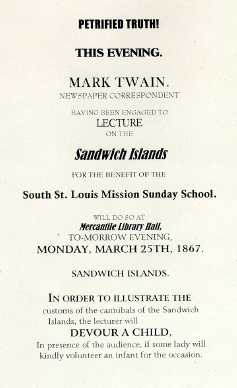

|

In the spring of 1867, over five years since he'd left the River to head west for Nevada, MT returned from the east. While looking for silver in 1862 he told Orion that he'd never go home until he'd struck it rich. That still hadn't happened, but as the New York and traveling correspondent for the Alta California, the author of "The Jumping Frog," and a humorous lecturer from "the Pacific Slope," he was on his way toward stardom. While at "home" in Missouri MT gave his Sandwich Island lecture five times: twice in St. Louis (March 25 & 26), in Hannibal (April 2), in Keokuk, Iowa (April 5), and in Quincy, Illinois (April 9). He told his Alta readers that he was lecturing by request, but he certainly worked hard to arouse interest. The ad at left is my reproduction of the humorous notice he published in the St. Louis Daily Missouri Republican the day of the lecture. (The original ad I'm reproducing was too blurred to scan, and by the end too blurred to read; if anyone has a legible copy of this ad I'd be grateful for the chance to use it. MT had first offered to illustrate cannibalism by eating an infant during a performance in California, but I haven't seen any other ads that use the gag this way.) Also on the day of the lecture he printed a comic promotional letter in the same paper, promising all kinds of prizes for people in the audience. He wrote another humorous promotional letter to the Quincy Herald on the day of his lecture there. The South St. Louis Mission Sunday School is not a gag; his St. Louis performances really were for its benefit. Surprisingly, the St. Louis papers made no mention of the fact that "Mark Twain" was a native Missourian; the Daily Missouri Democrat, for example, refers to him as "the irrepressible Californian." No Hannibal papers for this period survive, so we can't know how his hometown treated the returning prodigal. |